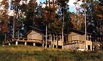

| Residencies of the World
A review of some of the world's best ceramics residencies.
Artist-in-residencies vary greatly in prices, facilities and philosophy
from one institution to another. Click on the links below to find
out more about that particular center.
Europe
Located in the heart of the old town of Vallauris,
France, the non-profit Association A.I.R.
Vallauris (Artists in Residence) welcomes international
artists from all horizons to meet and collaborate with local artists
and to research and create new work in an artistic laboratory created
specifically for them.
The
European Ceramic Work Center - is an international
workshop located in 's-Hertogenbosch, The Netherlands, where participants
explore the art and techniques of ceramics. The studio offers working
and living space, as well as a team of specialized professionals.

The International Ceramics Studio
(ICS) - is a ceramic art center located eighty kilometers
south of the Hungarian capital, Budapest. The mission of the studio
is to promote the formal, aesthetic and technical development of
ceramics and to help foster creative skills.
Rufford Craft
Center - it's got the lot - a collection of British studio
pottery, a research facility, a library and a studio complete with
a residency program. A fully-equipped pottery studio is used for
residencies by established potters and promising newcomers from
both the UK and abroad.
Canada
The Banff Centre for the
Arts is Canada's only learning Center dedicated to the arts,
leadership development, and mountain culture. Programs to advance
professional arts practice, provide skill development through training,
and engage in cultural research and experimentation are made available
on a national level.
USA
The Anderson Ranch Arts
Center is a learning community dedicated to creativity and
growth through the making and understanding of the visual arts.
Located in the resort community of Snowmass Village, Colorado, 10
miles west of Aspen and 160 miles west of Denver.
The Appalachian
Center for Crafts, a division of Tennessee Technological
University (TTU), is a unique educational facility emphasizing professional
degree studies in traditional and contemporary fine craft in clay,
fibers, glass, metals and wood. The facility is located on 500 wooded
acres in scenic Middle Tennessee, near the town of Smithville, overlooking
Center Hill Lake.
The Archie Bray Foundation
was founded in 1951. It is a non-profit, educational institution
dedicated to the enrichment of the ceramic arts, offering residencies
and specialized workshops to ceramic artists from around the world.
The 'Bray', as it is known, is located in Helena, Montana.
The Clay Art Center
is a potter's studio of 35 members offering classes, workshops,
a residency program and kiln firing services. A monthly gallery
exhibit will also be featured in the virtual gallery. It's located
in Port Chester, New York.
Hurricane Mountain
is a 'Center for Earth Arts', located in the magnificent Adirondack
Mountains of New York state. The center offers summer and winter
residencies and community workshops for artists primarily working
in clay, fiber, wood and stone.

The Nottingham Center
for the Arts, located in San Marcos, California, offers
artist residencies, workshops, conferences, seminars, exhibits,
art events, and special facilities for artists, as well as meeting
and event space to other arts organizations.
Pewabic Pottery is
located in Detroit, Michigan. It offers internships for university
students. Internships can be served in a variety of departments,
such as Education or Fabrication Studios, Gallery, Communications
and Development. Pewabic staff members serve as mentors.
Watershed
Ceramic Arts Studio - a residency-retreat which provides
artists from across the country and abroad with time and space to
create in clay. Located in Maine, USA.
Many Universities around the world also offer artist-in-residency
programs - too many to list here. Contact the educational
institutions in the area of your choice directly for more
information. Research! Please also visit the Residencies
links section for updates and more great world residencies!
More Articles
|
{kind=link}